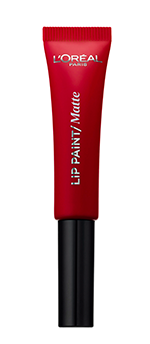

На личном опыте
Блогеры SPLETNIK.RU приняли участие
в фотосессии к юбилею Каннского
фестиваля
Новый специальный проект SPLETNIK.RU посвящен юбилею Каннского кинофестиваля, который отмечает в этом году 70-летие, и еще одной важной дате - 20-летию сотрудничества с фестивалем знаменитой марки L'Oreal Paris. По этому поводу мы предложили трем нашим блогерам самим почувствовать себя настоящими звездами, ведь наблюдая за блистательными знаменитостями в Каннах, так и хочется побывать на их месте - в свете софитов и в окружении поклонников. Почему бы и нет, ведь мы этого достойны!
По приглашению редакции блогеры serayamol (Анна), Kuz (Екатерина) и Luciana (Мила) прибыли в отель St. Regis, где команда профессиональных стилистов и визажистов создала для каждой девушки образ, вдохновленный культовыми выходами на красную дорожку звездных посланниц L'Oreal Paris.
Комфортнее всего я чувствую себя, когда наношу на губы легкий розоватый блеск или гигиеническую помаду.Если делаю смоки айз, то подбираю для губ нейтральный оттенок, если мои любимые стрелки, то им сопутствует красная или темно-вишневая помада.
Визажист L’Oreal Paris
Елена Анисимова:
Милы очень красивый цвет глаз, именно на ее голубые глаза я и сделала акцент. Если подчеркнуть брови тенями из палетки Brow artist Genius Kit, а глаза тенями бронзового оттенка, например, Color Riche Quadro "Бежевый тренч", то цвет глаз становится еще ярче, во взгляде появляется особая глубина, привлекающая внимание.
Тени Brow artist Genius Kit
Тени Color Riche Quadro, оттенок "Бежевый тренч"
Бирюзовое платье, которое мне подобрали, я бы вряд ли выбрала для себя сама. Но благодаря работе стилистов, которым удалось расширить мои горизонты, я осталась довольна своим образом, пусть и несколько неожиданным для меня.
Чей звездный мейк вы считаете беспроигрышным?
Мне очень нравится, как красят Оливию Палермо и Кейт Бекинсейл. Вполне возможно, что и у них бывают неудачные выходы, но чаще всего я ими откровенно любуюсь.
Ваш любимый женский образ в кино?
Их два. Во-первых, Моника Беллуччи в роли Клеопатры. Ее удивительной красоты лицо совершенно не теряется на фоне сложного грима, безумных причесок и ярких нарядов. А во-вторых, Анджелина Джоли в роли Лары Крофт. Диаметрально противоположный образ, не перегруженный красками. Лара – это современная амазонка. "Естественный" мейк и убранные в косу волосы только подчеркивают сильные черты лица Анджелины.
Какой из фильмов конкурсной программы этого года вы считаете главным претендентом на победу?
Прогнозы в моем случае – дело неблагодарное, я почти никогда не угадываю даже имена лауреатов более предсказуемой премии "Оскар". Желаю победы "Нелюбви" Андрея Звягинцева, "Родену" Жака Дуайона и "Миру, полному чудес" Тодда Хейнса.
Чей образ с красной дорожки Каннского фестиваля этого года вам запомнился и почему?
Сара Сампайо в красном платье на открытии фестиваля была божественна! Мне кажется, в этом образе сошлось все – идеальная посадка платья, макияж, подчеркнувший ее ярко-зеленые глаза, мягкие волны волос вокруг лица, уходящие в косу. Глаз не оторвать!
Считаю, что мне идет холодная гамма, поэтому имею на каждый день оттенок помады, в основе которого натуральный цвет моих губ с освежающей капелькой малинового сока, два цвета для особых случаев, использую также довольно темный винно-сливовый оттенок с "голыми" глазами.
Визажист L’Oreal Paris
Елена Анисимова:
Акцент в этом образе был сделан на губы. Шикарная красная помада в тон платья Infaillible Lip Paint 205 стала самым заметным элементом всего макияжа.
Тон я подбирала так, чтобы он гармонично сочетался не только с оттенком платья, но и с цветом кожи – именно так красная помада будет выгодно смотреться в образе.
Помада Infaillible Lip Paint, оттенок 205

Слово "понравилось" очень скудно отражает мои впечатления от съемки - я чувствовала себя настоящей принцессой или звездой. Что скрывать, было приятно носить платья и обувь за несколько сотен тысяч рублей, окунуться в сверкающую роскошь, а потом вновь вернуться в теплые уютные будни.
Чей звездный мейк вы считаете беспроигрышным?
Всегда с удовольствием рассматриваю макияж певицы Риты Оры, очень нравится ее лицо с крупными и четкими чертами, она часто использует яркие цветные тени и помаду. Я, конечно, понимаю, что не вхожу в общий с ней типаж, но оторвать взгляд не могу и вряд ли решусь на подобные радужные цвета в макияже, хотя в 12 лет я красила глаза перламутровым ярким травянистым зеленым.
Ваш любимый женский образ в кино?
Образы Элис в фильме "Турист" в исполнении Анджелины Джоли. Удивительно: я не люблю саму актрису, мне абсолютно не понравился фильм, но приталенные жакеты и юбки-карандаши, развевающийся пояс, завязанный сзади. Костюмерам браво!
Какой из фильмов конкурсной программы этого года вы считаете главным претендентом на победу?
У меня довольно однобокий вкус в этом вопросе, поэтому однозначно голосую за французское кино: L'amant double и Le redoutable.
Чей образ с красной дорожки Каннского фестиваля этого года вам запомнился и почему?
Самый запоминающийся для меня - образ Ольги Куриленко, ее безупречное лицо и фигура в этом кремово-бежевом платье с бледно-голубой вышивкой. Единственный момент: не уверена, что нижняя юбка, скрывающая нижнее белье, сделала бы платье хуже. Еще хочу отметить пышные юбки Николь Кидман по середину икры и изящные босоножки. Что скажешь? Бинго!
"Я практически не крашусь, а в тех редких случаях, когда все-таки наношу мейк, делаю акцент на глаза и использую обычно только бальзам для губ. До этого дня смоки айс и красная помада на моем лице не появлялись никогда, но теперь я задумалась о том, не начать ли мне краситься. поярче".
Визажист L’Oreal Paris
Елена Анисимова:
В центре образа нашей героини - сочетание довольно темного оттенка теней и яркой помады Infaillible Lip Paint. Чтобы сделать макияж гармоничным, я создала сияющий тон с помощью хайлайтера Alliance Perfect: это придало образу свежести и легкости.
Хайлайтер Alliance Perfect
Это был интереснейший опыт. Здорово увидеть процесс модной съемки изнутри: стала понятней работа не только моделей, но и стилистов, визажистов, парикмахеров, фотографов.
Чей звездный мейк вы считаете беспроигрышным?
Мне очень нравится, как красят Оливию Палермо и Кейт Бекинсейл. Вполне возможно, что и у них бывают неудачные выходы, но чаще всего я ими откровенно любуюсь.
Ваш любимый женский образ в кино?
Их два. Во-первых, Моника Беллуччи в роли Клеопатры. Ее удивительной красоты лицо совершенно не теряется на фоне сложного грима, безумных причесок и ярких нарядов. А во-вторых, Анджелина Джоли в роли Лары Крофт. Диаметрально противоположный образ, не перегруженный красками. Лара – это современная амазонка. "Естественный" мейк и убранные в косу волосы только подчеркивают сильные черты лица Анджелины.
Какой из фильмов конкурсной программы этого года вы считаете главным претендентом на победу?
Прогнозы в моем случае – дело неблагодарное, я почти никогда не угадываю даже имена лауреатов более предсказуемой премии "Оскар". Желаю победы "Нелюбви" Андрея Звягинцева, "Родену" Жака Дуайона и "Миру, полному чудес" Тодда Хейнса.
Чей образ с красной дорожки Каннского фестиваля этого года вам запомнился и почему?
Сара Сампайо в красном платье на открытии фестиваля была божественна! Мне кажется, в этом образе сошлось все – идеальная посадка платья, макияж, подчеркнувший ее ярко-зеленые глаза, мягкие волны волос вокруг лица, уходящие в косу. Глаз не оторвать!
Локация:
отель St. Regis Никольская
Фотограф:
Андрей Ярошевич @andreyyaroshevich
Стилист по волосам:
Армен Захарян, Академия L’ORÉAL Professionnel
Визажист:
Лена Анисимова, Академия L’ORÉAL Professionnel
Стилист:
Юка Вижгородская
Ассистент стилиста:
Арина Фрост